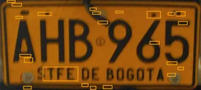
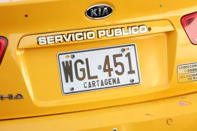

Así viaja una imagen por el sistema
Salidas reales del código con la foto de una placa de Popayán. Cada parámetro corresponde a src/preprocessor.py.
En una placa de casi 900 px de alto, el bloque de 19 px solo encuentra bordes y las letras quedan huecas en las etapas 05 y 06. Por eso EasyOCR no lee la salida final. La corrección propuesta normaliza la altura del recorte antes de filtrar.
Pruébalo con una lectura del OCR
Escribe lo que el OCR podría haber leído. El validador fuerza letras en las tres primeras posiciones y dígitos en la cuarta y la quinta; la sexta decide si es carro o moto.
Validador colombiano
AAA000 carro · AAA00A motoVotación entre cuadros
N = 7 · k = 4 · espera 15 sUn carro pasa frente a la cámara durante varios cuadros. El sistema registra la placa cuando 4 de los últimos 7 cuadros válidos coinciden y luego la ignora 15 s para no duplicarla.
| id | placa | sentido | momento | confianza |
|---|---|---|---|---|
| Sin registros todavía. Lee cuadros hasta que 4 coincidan. | ||||
El validador y la votación son el mismo algoritmo de src/validator.py portado a JavaScript. Las lecturas del panel derecho son simuladas; el OCR y la cámara no corren en el navegador.
Laboratorio OpenCV.js en el navegador
Carga OpenCV.js bajo demanda para correr las etapas de preprocesamiento sobre una muestra del repositorio o una foto propia. El OCR (EasyOCR) no corre en el navegador.
1. Foto y recorte de la placa
ROI: —2. Parámetros del pipeline
Solo OpenCV · sin EasyOCRCuando el bloque del umbral adaptativo es pequeño frente a la altura del recorte (por ejemplo 11-19 px sobre 140-300 px), el vecindario solo cubre bordes y las letras quedan huecas. Sube el bloque hacia ~0.3× la altura para rellenarlas.
bloque / altura = 0.31El OCR (EasyOCR) no corre en el navegador: aquí ves únicamente el efecto de cada filtro de OpenCV antes de pasar al lector.
Recorte normalizado
—Escala de grises
—Filtro bilateral
—Umbral
—Morfología
—Lo que mide hoy el sistema
Las 11 fotos de data/samples pasadas por el pipeline actual en CPU, con la placa verdadera leída a mano. Es el punto de partida; la columna "después" se llena al terminar las correcciones.
| foto | placa real | sin preprocesar | con preprocesar | después |
|---|
Dónde falla y por qué
Tres casos reales de las pruebas, con la lectura que devolvió el sistema.

Cajas por todas partes
El detector de respaldo marcó 23 regiones en una foto que solo tiene una placa. Sin YOLO, cualquier zona con bordes verticales parece placa.
23 cajas → ninguna lectura válida
Placa blanca de servicio público
El fondo blanco y la carrocería amarilla confunden al umbral. La placa WGL451 se leyó como otra placa válida.
WGL451 → AOG686 (sin preprocesar)
La ciudad se pega a la placa
La franja con el nombre del municipio entra en la misma caja y el OCR une las dos líneas en un solo texto.
SJS444 → 9HSOUEDRADAS444Correr la consola de operación
La consola es una app de Streamlit que corre en el equipo de la garita o en un contenedor. Este sitio es solo la presentación del proyecto.
Con Docker
# construye e inicia en segundo plano docker compose up -d --build # abre http://localhost:8501
Los volúmenes db/ y data/ conservan los registros entre reinicios.
En Linux Mint o Ubuntu
git clone https://github.com/y0ner/smart-alpr-iot cd smart-alpr-iot ./run.sh
run.sh crea el entorno virtual la primera vez e instala las dependencias.